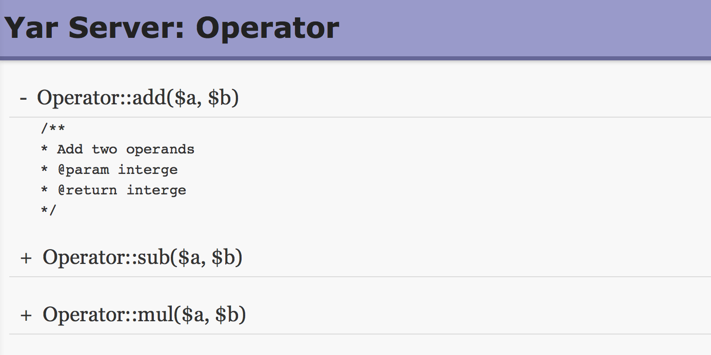

ExamplesExample #1 Yar Server Example
<?phpExample #2 Access the server in borwser(GET request) The above example will output something similar to:

Example #3 Yar Client Example
<?phpThe above example will output something similar to: int(3) int(5) PHP Fatal error: Uncaught exception 'Yar_Server_Exception' with message 'call to api Operator::_add() failed' in * Example #4 Yar Concurrent Client Example
<?phpThe above example will output something similar to: mul result: 4 sub result: 1 add result: 3 |